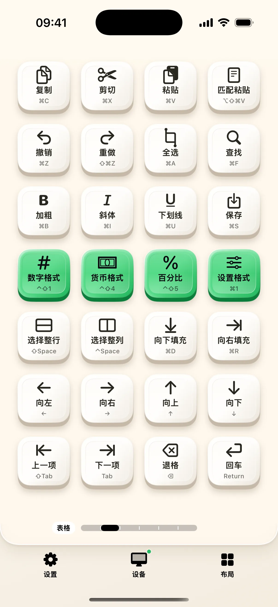

奶猫妙控的财务布局把常用录入工具放到手机：数字键盘与计算器共用一组大按键，表格页提供快捷键，四个公式页收纳 64 个函数。它向 Mac 当前应用输入按键或文字，不读取工作簿和单元格。
录入与计算，切换后保留各自状态
底部滑块在数字键盘和计算器之间切换。数字键盘可向文本框、浏览器和表格软件输入；上一项、下一项对应 Shift Tab 与 Tab。计算器在手机本地完成十进制四则运算，复制离线可用，发送结果不会附加回车。
表格页把实际快捷键写在按钮上
二十八枚按键覆盖复制粘贴、撤销重做、格式、行列选择、填充和方向导航。每个键显示实际发送的组合，方便你判断当前软件是否支持。财务布局不会扫描菜单，也不会自动识别正在编辑的单元格。

点按公式，或长按填参数
公式按统计汇总、查找判断、数值日期、文本处理分成四页。点按会输入键帽上的公式前缀，例如 =SUM(；长按打开参数面板，填写范围、条件或文本后再复制或发送。文字参数会处理引号，逗号与分号可切换，SUMIFS 等支持增加条件组。
先确认输入位置与函数兼容性
把 Mac 光标放到需要接收内容的位置，再在手机发送。不同表格软件、版本和地区设置对函数与分隔符的支持不同，发送文字不代表公式已经计算成功。计算器按连续四则执行，例如 2 + 3 × 4 得到 20，应按这个规则使用。
开始使用
- 在 Mac 选定输入框，手机打开「财务」。
- 用滑块切换数字键盘与计算器，测试发送结果。
- 进入公式桌面，长按一个函数填写参数并核对预览。
常见问题
需要让应用读取 Excel 文件吗？
不需要。当前财务布局使用通用键盘与文字输入，不读取工作簿。
公式会自动按回车计算吗？
不会。发送只输入公式文字，提交与计算由你和目标软件决定。
本文对应 1.2.0。查看更新说明，或加入 iPhone / iPad TestFlight。